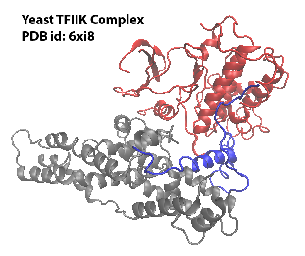
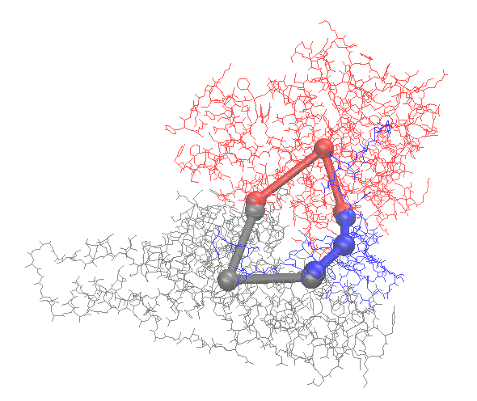
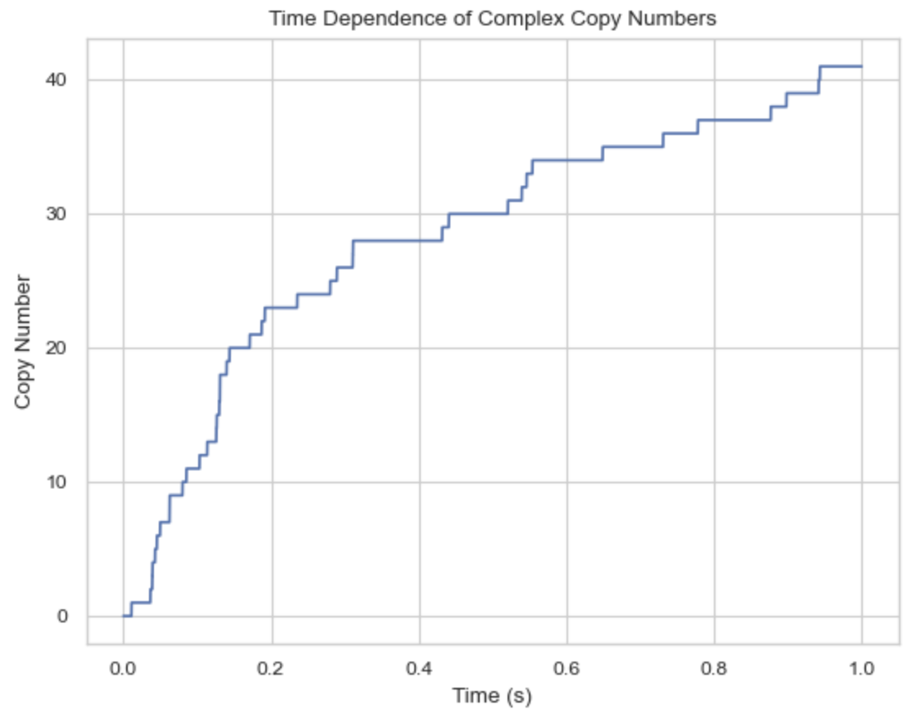

Read PDB structures from the database and generate NERDSS inputs
This tutorial will explore how to generate inputs for NERDSS using the real PDB structure with the Yeast TFIIK Complex as an example. Download the PDB file and save it under your working directory.
Install and Import the library
pip install ioNERDSS
import ioNERDSS as ion
Visualize the PDB structure
This PDB structure has 3 chains. Each chain will be modeled to a molecule type in NERDSS simulation. And the molecules can assemble into the complex.

Use ioNERDSS to construct the coarse-grained structure
ion.cg('6xi8', 3.5)
The coarse-graind structure is saved as output.pdb. Following is the visualization of the original structure and the coarse-grained structure:

The output for NERDSS input structure parameters:
COM of chain C: 8.560, 9.803, 10.088
Interfaces of chain C: CA partner chain: A 8.936 10.472 9.434 energy: 91.000
CB partner chain: B 8.827 9.069 10.649 energy: 100.310
COM of chain A: 9.204, 10.077, 7.857
Interfaces of chain A: AC partner chain: C 9.016 10.492 9.302 energy: 91.000
AB partner chain: B 10.524 9.176 8.997 energy: 61.450
COM of chain B: 10.686, 8.405, 10.765
Interfaces of chain B: BC partner chain: C 8.893 9.041 10.748 energy: 100.310
BA partner chain: A 10.544 9.154 9.213 energy: 61.450
output.pdb has been generated.
nerdss input parameters:
mol C:
com 0.000 0.000 0.000
CA [0.376, 0.669, -0.654]
partner A
partner interface: AC
theta1 2.548 theta2 2.563 phi1 -0.749 phi2 1.886 omega 0.808
[2.548, 2.563, -0.749, 1.886, 0.808]
n1 0.000 0.000 1.000
n2 0.000 0.000 1.000
sigma 0.156
energy 91.000
CB [0.267, -0.733, 0.560]
partner B
partner interface: BC
theta1 2.496 theta2 2.205 phi1 2.351 phi2 -0.047 omega -1.672
[2.496, 2.205, 2.351, -0.047, -1.672]
n1 0.000 0.000 1.000
n2 0.000 0.000 1.000
sigma 0.122
energy 100.310
mol A:
com 0.000 0.000 0.000
AC [-0.188, 0.415, 1.446]
partner C
partner interface: CA
theta1 2.563 theta2 2.548 phi1 1.886 phi2 -0.749 omega 0.808
[2.563, 2.548, 1.886, -0.749, 0.808]
n1 0.000 0.000 1.000
n2 0.000 0.000 1.000
sigma 0.156
energy 91.000
AB [1.320, -0.900, 1.141]
partner B
partner interface: BA
theta1 2.327 theta2 2.797 phi1 -3.097 phi2 0.218 omega 2.128
[2.327, 2.797, -3.097, 0.218, 2.128]
n1 0.000 0.000 1.000
n2 0.000 0.000 1.000
sigma 0.218
energy 61.450
mol B:
com 0.000 0.000 0.000
BC [-1.793, 0.636, -0.017]
partner C
partner interface: CB
theta1 2.205 theta2 2.496 phi1 -0.047 phi2 2.351 omega -1.672
[2.205, 2.496, -0.047, 2.351, -1.672]
n1 0.000 0.000 1.000
n2 0.000 0.000 1.000
sigma 0.122
energy 100.310
BA [-0.142, 0.749, -1.552]
partner A
partner interface: AB
theta1 2.797 theta2 2.327 phi1 0.218 phi2 -3.097 omega 2.128
[2.797, 2.327, 0.218, -3.097, 2.128]
n1 0.000 0.000 1.000
n2 0.000 0.000 1.000
sigma 0.218
energy 61.450
Prepare the NERDSS inputs
Following are the input files for the NERDSS simulation based on the above outputs:
##
# A molecule information file
##
Name = A
checkOverlap = true
# translational diffusion constants
D = [10.0, 10.0, 10.0]
# rotational diffusion constants
Dr = [0.02, 0.02, 0.02]
# Coordinates
COM 0.0000 0.0000 0.0000
AC -0.1880 0.4150 1.4460
AB 1.3200 -0.9000 1.1410
# bonds for visualization only.
bonds = 2
com AC
com AB
##
# B molecule information file
##
Name = B
checkOverlap = true
# translational diffusion constants
D = [10.0, 10.0, 10.0]
# rotational diffusion constants
Dr = [0.02, 0.02, 0.02]
# Coordinates
COM 0.0000 0.0000 0.0000
BC -1.7930 0.6360 -0.0170
BA -0.1420 0.7490 -1.5520
# bonds for visualization only.
bonds = 2
com BC
com BA
##
# C molecule information file
##
Name = C
checkOverlap = true
# translational diffusion constants
D = [10.0, 10.0, 10.0]
# rotational diffusion constants
Dr = [0.02, 0.02, 0.02]
# Coordinates
COM 0.0000 0.0000 0.0000
CA 0.3760 0.6690 -0.6540
CB 0.2670 -0.7330 0.5600
# bonds for visualization only.
bonds = 2
com CA
com CB
# Input file
start parameters
nItr = 10000000
timeStep = 0.1
timeWrite = 1000
trajWrite = 10000000
pdbWrite = 100000
restartWrite = 100000
scaleMaxDisplace = 100.0
overlapSepLimit = 2.0
end parameters
start boundaries
WaterBox = [200,200,200]
end boundaries
start molecules
A : 50
B : 50
C : 50
end molecules
start reactions
#### A - C ####
A(AC) + C(CA) <-> A(AC!1).C(CA!1)
onRate3Dka = 0.91
offRatekb = 0.1
sigma = 0.156
norm1 = [0,0,1]
norm2 = [0,0,1]
assocAngles = [2.563, 2.548, 1.886, -0.749, 0.808]
excludeVolumeBound = True
#### A - B ####
A(AB) + B(BA) <-> A(AB!1).B(BA!1)
onRate3Dka = 0.61
offRatekb = 0.1
sigma = 0.218
norm1 = [0,0,1]
norm2 = [0,0,1]
assocAngles = [2.327, 2.797, -3.097, 0.218, 2.128]
excludeVolumeBound = True
#### B - C ####
B(BC) + C(CB) <-> B(BC!1).C(CB!1)
onRate3Dka = 1
offRatekb = 0.1
sigma = 0.122
norm1 = [0,0,1]
norm2 = [0,0,1]
assocAngles = [2.205, 2.496, -0.047, 2.351, -1.672]
excludeVolumeBound = True
end reactions
Run the NERDSS simulation
./nerdss -f parm.inp > output.log
Analyze the NERDSS outputs
Time (s): 0
50 A: 1.
50 B: 1.
50 C: 1.
Time (s): 0.0001
50 A: 1.
50 B: 1.
50 C: 1.
Time (s): 0.0002
50 A: 1.
50 B: 1.
50 C: 1.
...
Time (s): 0.9999
41 A: 1. B: 1. C: 1.
5 A: 1. C: 1.
4 B: 1. C: 1.
4 A: 1. B: 1.
1 B: 1.
Time (s): 1
41 A: 1. B: 1. C: 1.
5 A: 1. C: 1.
4 B: 1. C: 1.
4 A: 1. B: 1.
1 B: 1.
import ioNERDSS as ion
filename = './histogram_complexes_time.dat'
desired_components = ["A: 1", "B: 1", "C: 1"]
times, counts = ion.get_time_dependence(filename, desired_components)
ion.plot_time_dependence(times, counts)
